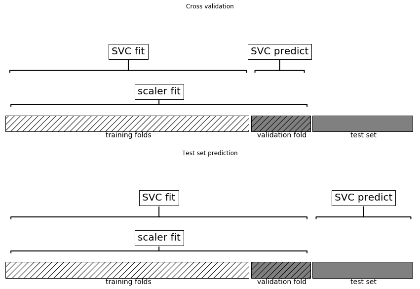
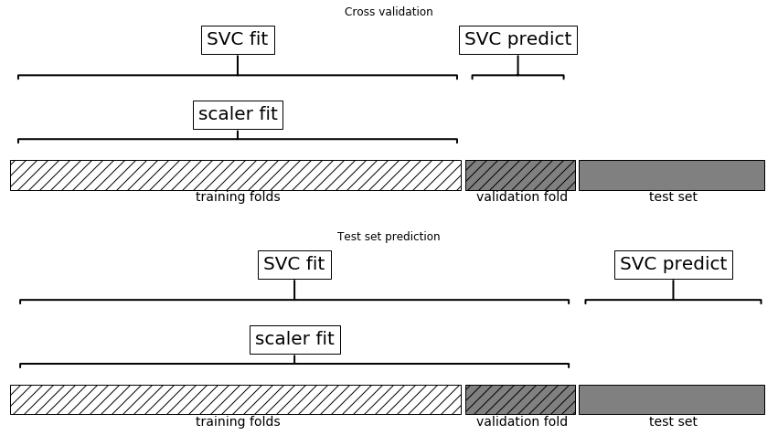
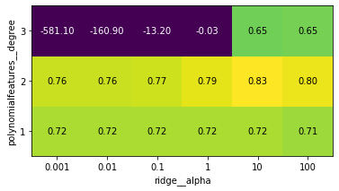

from preamble import *
%matplotlib inlineChapter 6 - Algorithm Chains and Pipelines
Algorithm Chains and Pipelines
from sklearn.svm import SVC
from sklearn.datasets import load_breast_cancer
from sklearn.model_selection import train_test_split
from sklearn.preprocessing import MinMaxScaler
# load and split the data
cancer = load_breast_cancer()
X_train, X_test, y_train, y_test = train_test_split(
cancer.data, cancer.target, random_state=0)
# compute minimum and maximum on the training data
scaler = MinMaxScaler().fit(X_train)# rescale the training data
X_train_scaled = scaler.transform(X_train)
svm = SVC()
# learn an SVM on the scaled training data
svm.fit(X_train_scaled, y_train)
# scale the test data and score the scaled data
X_test_scaled = scaler.transform(X_test)
print("Test score: {:.2f}".format(svm.score(X_test_scaled, y_test)))Test score: 0.97Parameter Selection with Preprocessing
from sklearn.model_selection import GridSearchCV
# for illustration purposes only, don't use this code!
param_grid = {'C': [0.001, 0.01, 0.1, 1, 10, 100],
'gamma': [0.001, 0.01, 0.1, 1, 10, 100]}
grid = GridSearchCV(SVC(), param_grid=param_grid, cv=5)
grid.fit(X_train_scaled, y_train)
print("Best cross-validation accuracy: {:.2f}".format(grid.best_score_))
print("Best parameters: ", grid.best_params_)
print("Test set accuracy: {:.2f}".format(grid.score(X_test_scaled, y_test)))Best cross-validation accuracy: 0.98
Best parameters: {'C': 1, 'gamma': 1}
Test set accuracy: 0.97mglearn.plots.plot_improper_processing()
Building Pipelines
from sklearn.pipeline import Pipeline
pipe = Pipeline([("scaler", MinMaxScaler()), ("svm", SVC())])pipe.fit(X_train, y_train)Pipeline(steps=[('scaler', MinMaxScaler()), ('svm', SVC())])print("Test score: {:.2f}".format(pipe.score(X_test, y_test)))Test score: 0.97Using Pipelines in Grid-searches
param_grid = {'svm__C': [0.001, 0.01, 0.1, 1, 10, 100],
'svm__gamma': [0.001, 0.01, 0.1, 1, 10, 100]}grid = GridSearchCV(pipe, param_grid=param_grid, cv=5)
grid.fit(X_train, y_train)
print("Best cross-validation accuracy: {:.2f}".format(grid.best_score_))
print("Test set score: {:.2f}".format(grid.score(X_test, y_test)))
print("Best parameters: {}".format(grid.best_params_))Best cross-validation accuracy: 0.98
Test set score: 0.97
Best parameters: {'svm__C': 1, 'svm__gamma': 1}mglearn.plots.plot_proper_processing()
rnd = np.random.RandomState(seed=0)
X = rnd.normal(size=(100, 10000))
y = rnd.normal(size=(100,))from sklearn.feature_selection import SelectPercentile, f_regression
select = SelectPercentile(score_func=f_regression, percentile=5).fit(X, y)
X_selected = select.transform(X)
print("X_selected.shape: {}".format(X_selected.shape))X_selected.shape: (100, 500)from sklearn.model_selection import cross_val_score
from sklearn.linear_model import Ridge
print("Cross-validation accuracy (cv only on ridge): {:.2f}".format(
np.mean(cross_val_score(Ridge(), X_selected, y, cv=5))))Cross-validation accuracy (cv only on ridge): 0.91pipe = Pipeline([("select", SelectPercentile(score_func=f_regression,
percentile=5)),
("ridge", Ridge())])
print("Cross-validation accuracy (pipeline): {:.2f}".format(
np.mean(cross_val_score(pipe, X, y, cv=5))))Cross-validation accuracy (pipeline): -0.25The General Pipeline Interface
def fit(self, X, y):
X_transformed = X
for name, estimator in self.steps[:-1]:
# iterate over all but the final step
# fit and transform the data
X_transformed = estimator.fit_transform(X_transformed, y)
# fit the last step
self.steps[-1][1].fit(X_transformed, y)
return selfdef predict(self, X):
X_transformed = X
for step in self.steps[:-1]:
# iterate over all but the final step
# transform the data
X_transformed = step[1].transform(X_transformed)
# predict using the last step
return self.steps[-1][1].predict(X_transformed)
Convenient Pipeline creation with make_pipeline
from sklearn.pipeline import make_pipeline
# standard syntax
pipe_long = Pipeline([("scaler", MinMaxScaler()), ("svm", SVC(C=100))])
# abbreviated syntax
pipe_short = make_pipeline(MinMaxScaler(), SVC(C=100))print("Pipeline steps:\n{}".format(pipe_short.steps))Pipeline steps:
[('minmaxscaler', MinMaxScaler()), ('svc', SVC(C=100))]from sklearn.preprocessing import StandardScaler
from sklearn.decomposition import PCA
pipe = make_pipeline(StandardScaler(), PCA(n_components=2), StandardScaler())
print("Pipeline steps:\n{}".format(pipe.steps))Pipeline steps:
[('standardscaler-1', StandardScaler()), ('pca', PCA(n_components=2)), ('standardscaler-2', StandardScaler())]Accessing step attributes
# fit the pipeline defined before to the cancer dataset
pipe.fit(cancer.data)
# extract the first two principal components from the "pca" step
components = pipe.named_steps["pca"].components_
print("components.shape: {}".format(components.shape))components.shape: (2, 30)Accessing Attributes in a Pipeline inside GridSearchCV
from sklearn.linear_model import LogisticRegression
pipe = make_pipeline(StandardScaler(), LogisticRegression(max_iter=1000))param_grid = {'logisticregression__C': [0.01, 0.1, 1, 10, 100]}X_train, X_test, y_train, y_test = train_test_split(
cancer.data, cancer.target, random_state=4)
grid = GridSearchCV(pipe, param_grid, cv=5)
grid.fit(X_train, y_train)GridSearchCV(cv=5,
estimator=Pipeline(steps=[('standardscaler', StandardScaler()),
('logisticregression',
LogisticRegression(max_iter=1000))]),
param_grid={'logisticregression__C': [0.01, 0.1, 1, 10, 100]})print("Best estimator:\n{}".format(grid.best_estimator_))Best estimator:
Pipeline(steps=[('standardscaler', StandardScaler()),
('logisticregression', LogisticRegression(C=1, max_iter=1000))])print("Logistic regression step:\n{}".format(
grid.best_estimator_.named_steps["logisticregression"]))Logistic regression step:
LogisticRegression(C=1, max_iter=1000)print("Logistic regression coefficients:\n{}".format(
grid.best_estimator_.named_steps["logisticregression"].coef_))Logistic regression coefficients:
[[-0.436 -0.343 -0.408 -0.534 -0.15 0.61 -0.726 -0.785 0.039 0.275
-1.298 0.049 -0.673 -0.934 -0.139 0.45 -0.13 -0.101 0.434 0.716
-1.091 -1.095 -0.852 -1.064 -0.743 0.073 -0.823 -0.653 -0.644 -0.42 ]]Grid-searching preprocessing steps and model parameters
from sklearn.datasets import load_boston
boston = load_boston()
X_train, X_test, y_train, y_test = train_test_split(boston.data, boston.target,
random_state=0)
from sklearn.preprocessing import PolynomialFeatures
pipe = make_pipeline(
StandardScaler(),
PolynomialFeatures(),
Ridge())param_grid = {'polynomialfeatures__degree': [1, 2, 3],
'ridge__alpha': [0.001, 0.01, 0.1, 1, 10, 100]}grid = GridSearchCV(pipe, param_grid=param_grid, cv=5, n_jobs=-1)
grid.fit(X_train, y_train)GridSearchCV(cv=5,
estimator=Pipeline(steps=[('standardscaler', StandardScaler()),
('polynomialfeatures',
PolynomialFeatures()),
('ridge', Ridge())]),
n_jobs=-1,
param_grid={'polynomialfeatures__degree': [1, 2, 3],
'ridge__alpha': [0.001, 0.01, 0.1, 1, 10, 100]})mglearn.tools.heatmap(grid.cv_results_['mean_test_score'].reshape(3, -1),
xlabel="ridge__alpha", ylabel="polynomialfeatures__degree",
xticklabels=param_grid['ridge__alpha'],
yticklabels=param_grid['polynomialfeatures__degree'], vmin=0)<matplotlib.collections.PolyCollection at 0x24f81d6d848>
print("Best parameters: {}".format(grid.best_params_))Best parameters: {'polynomialfeatures__degree': 2, 'ridge__alpha': 10}print("Test-set score: {:.2f}".format(grid.score(X_test, y_test)))Test-set score: 0.77param_grid = {'ridge__alpha': [0.001, 0.01, 0.1, 1, 10, 100]}
pipe = make_pipeline(StandardScaler(), Ridge())
grid = GridSearchCV(pipe, param_grid, cv=5)
grid.fit(X_train, y_train)
print("Score without poly features: {:.2f}".format(grid.score(X_test, y_test)))Score without poly features: 0.63pipe = Pipeline([('preprocessing', StandardScaler()), ('classifier', SVC())])from sklearn.ensemble import RandomForestClassifier
param_grid = [
{'classifier': [SVC()], 'preprocessing': [StandardScaler(), None],
'classifier__gamma': [0.001, 0.01, 0.1, 1, 10, 100],
'classifier__C': [0.001, 0.01, 0.1, 1, 10, 100]},
{'classifier': [RandomForestClassifier(n_estimators=100)],
'preprocessing': [None], 'classifier__max_features': [1, 2, 3]}]X_train, X_test, y_train, y_test = train_test_split(
cancer.data, cancer.target, random_state=0)
grid = GridSearchCV(pipe, param_grid, cv=5)
grid.fit(X_train, y_train)
print("Best params:\n{}\n".format(grid.best_params_))
print("Best cross-validation score: {:.2f}".format(grid.best_score_))
print("Test-set score: {:.2f}".format(grid.score(X_test, y_test)))Best params:
{'classifier': SVC(C=10, gamma=0.01), 'classifier__C': 10, 'classifier__gamma': 0.01, 'preprocessing': StandardScaler()}
Best cross-validation score: 0.99
Test-set score: 0.98Avoiding Redundant Computation
pipe = Pipeline([('preprocessing', StandardScaler()), ('classifier', SVC())],
memory="cache_folder")